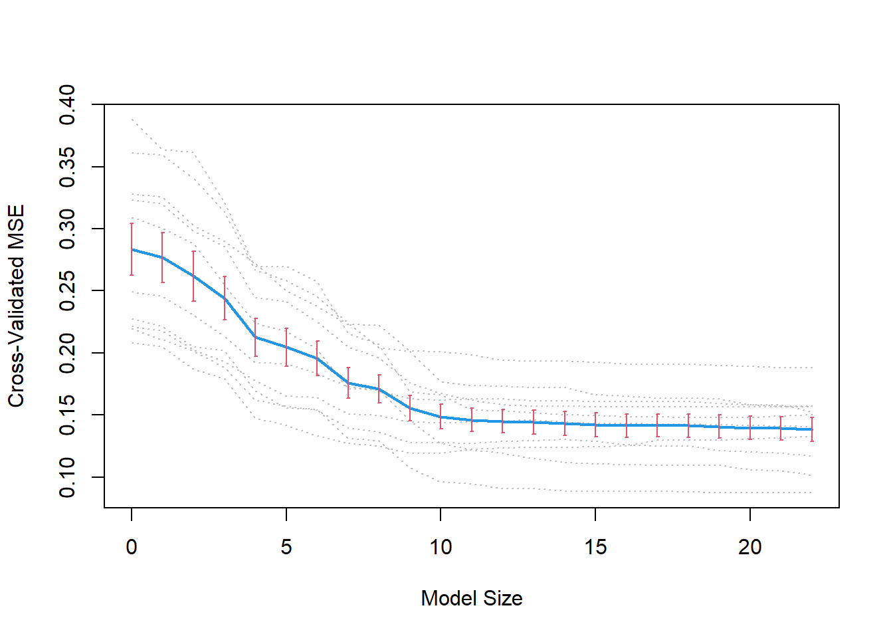

library(wooldridge)
library(spikeslab)
library(dplyr)Bayesian variable selection
Drivers of wage
Plotting
data analysis
economics
bayesian Analysis
Description of how to apply the bayesian variable selection approach
Load required packages
Preprocess our data
data(wage1, package = "wooldridge")
wage1 <- wage1 |>
select(-wage)Fit spikeslab regression
The spcikeslab regression model enable us to rank the determinants of wage accord to bma and gnet. The calculus of these concepts permits us to select the best drivers in the next steps.
set.seed(123)
obj <- spikeslab(lwage ~ . , wage1)
print(obj)-------------------------------------------------------------------
Variable selection method : AIC
Big p small n : FALSE
Screen variables : FALSE
Fast processing : TRUE
Sample size : 526
No. predictors : 22
No. burn-in values : 500
No. sampled values : 500
Estimated mse : 0.1323
Model size : 22
---> Top variables:
bma gnet bma.scale gnet.scale
educ 0.131 0.131 0.047 0.047
female -0.126 -0.132 -0.252 -0.265
tenure 0.118 0.154 0.016 0.021
exper 0.117 0.268 0.009 0.020
trade -0.107 -0.130 -0.237 -0.287
expersq -0.100 -0.250 0.000 0.000
profocc 0.100 0.106 0.207 0.219
services -0.070 -0.087 -0.231 -0.289
smsa 0.062 0.063 0.137 0.140
servocc -0.048 -0.038 -0.137 -0.110
married 0.044 0.033 0.091 0.068
tenursq -0.025 -0.066 0.000 0.000
west 0.024 0.022 0.064 0.060
northcen -0.016 -0.023 -0.038 -0.053
ndurman -0.013 -0.029 -0.039 -0.090
south -0.010 -0.017 -0.021 -0.037
profserv -0.008 -0.032 -0.017 -0.073
numdep -0.005 -0.019 -0.004 -0.015
trcommpu -0.005 -0.016 -0.024 -0.077
clerocc 0.001 0.010 0.003 0.027
construc -0.001 -0.008 -0.004 -0.039
nonwhite 0.000 -0.001 -0.001 -0.004
------------------------------------------------------------------- We can improve this approach using CV-validation .
cv.obj <- cv.spikeslab(x = wage1 %>% select(-lwage), y = wage1$lwage, K = 10) K-fold: 1
K-fold: 2
K-fold: 3
K-fold: 4
K-fold: 5
K-fold: 6
K-fold: 7
K-fold: 8
K-fold: 9
K-fold: 10
final analysis (full-data)
-------------------------------------------------------------------
Variable selection method : cross-validation
Big p small n : FALSE
Screen variables : FALSE
Fast processing : TRUE
Sample size : 526
No. predictors : 22
No. burn-in values : 500
No. sampled values : 500
K-fold : 10
CV mean-squared error : 0.139 +/- 0.009
Model size : [12,23]
Top variables in terms of stability:
bma bma.cv gnet gnet.cv stability
educ 0.131 0.131 0.131 0.131 100
female -0.126 -0.125 -0.133 -0.129 100
tenure 0.113 0.118 0.151 0.138 100
trade -0.106 -0.108 -0.129 -0.119 100
profocc 0.099 0.099 0.106 0.103 100
services -0.069 -0.070 -0.087 -0.078 100
smsa 0.062 0.061 0.063 0.060 100
servocc -0.049 -0.049 -0.038 -0.042 100
married 0.044 0.044 0.033 0.036 100
west 0.024 0.024 0.023 0.023 100
exper 0.122 0.112 0.272 0.206 90
expersq -0.105 -0.095 -0.254 -0.189 90
tenursq -0.021 -0.026 -0.062 -0.048 90
northcen -0.015 -0.017 -0.023 -0.017 90
ndurman -0.011 -0.013 -0.028 -0.022 90
south -0.009 -0.010 -0.017 -0.013 90
profserv -0.007 -0.009 -0.031 -0.023 90
numdep -0.006 -0.006 -0.020 -0.013 90
trcommpu -0.005 -0.006 -0.016 -0.012 80
construc -0.001 -0.002 -0.008 -0.006 80
clerocc 0.001 0.001 0.010 0.005 70
nonwhite 0.000 0.000 -0.001 -0.001 70
------------------------------------------------------------------- once the model is fitted, we observed that we need only 10 drivers; on the other hand, the variables that contributes the most in terms of stability are the following :
cv.stb <- as.data.frame(cv.obj$stability)
gnet <- cv.stb$gnet
stability <- cv.stb$stability
plot(gnet,stability,bty="n")
text(gnet, stability, rownames(cv.obj$stability), pos=1,cex = 0.8
)